Биоалхимия
Биоалхимия — это магическая дисциплина, объединяющая магию природы и изучение организмов для создания зелий и изменения живых существ. В отличие от чистой магии и рун, биоалхимия опирается на материальные компоненты, наполненные природной магией.
Зельеварение
Используя магию природы, из флоры и фауны можно создать зелья. Они применяют магический эффект на любого, кто выпьеёт их. Эффект зависит от конкретного ингредиента, которые описаны в последнем разделе.
Ингредиент обязательно нужно приготовить в воде, а потом добавить «магический крючок» из маны. «Магический крючок» позже активируется арканой в теле человека, что будет пить зелье, и магия сработает.
Для каждого ингредиента значения температуры и силы магического крючка разные, от 1 до 100. Их можно узнать в книгах либо эксперементальным путём, чтобы в итоге создавать идеальные зелья - в этом и состоит путь алхимика.
Руна закрепления
С помощью руны закрепления эффект зелья можно зафиксировать и применять неограниченное количество раз. Однако тогда он будет тратить аркану каждый раз, а эффект распространится не на человека, а на объект, на котором создана руна.
Контролируемая мутация
Плод ризы содержит в себе магию создания мутаций. С ними надо обращаться очень осторожно, однако если удастся превратить его в зелье, можно создавать контролируемую мутацию существ. Мастера могут ювелирно менять тела таким образом.
В связке с другими зельями можно восстановить критически раненную конечность человека или модифицировать его тело, однако такая работа сопряжена с огромными рисками и дефектами. Также это требует большого мастерства.
Флора и фауна
Самоцветный
Ареал: Весь континент
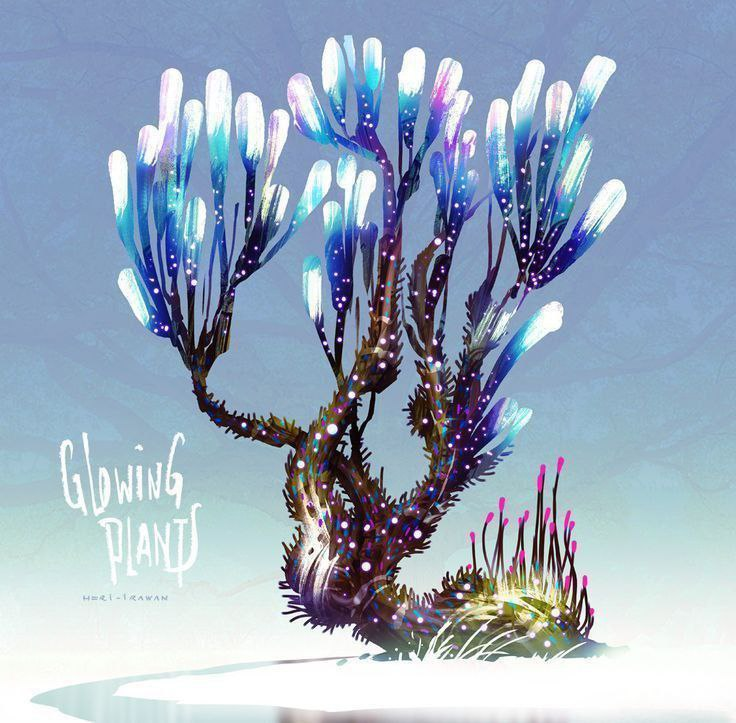Самоцветный — куст, на котором растут светящиеся плоды, форма которых напоминает людям самоцветы. В развитых регионах он высоко ценится из-за своих биоалхимических свойств, а среди неразвитых его считают талисманом, приносящим удачу и процветание.
Фострс
Ареал: Весь континент
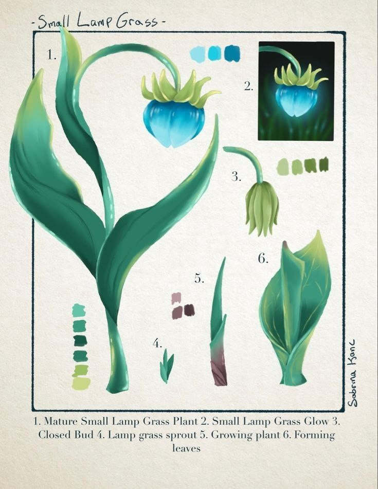Фострс это цветок, содержащий в себе магический сосуд, расположенный в его ядре. Этот сосуд обладает необычным свойством: если проглотить его, то вы почувствуете небольшой прилив арканы.
Абсодия
Ареал: Весь континент
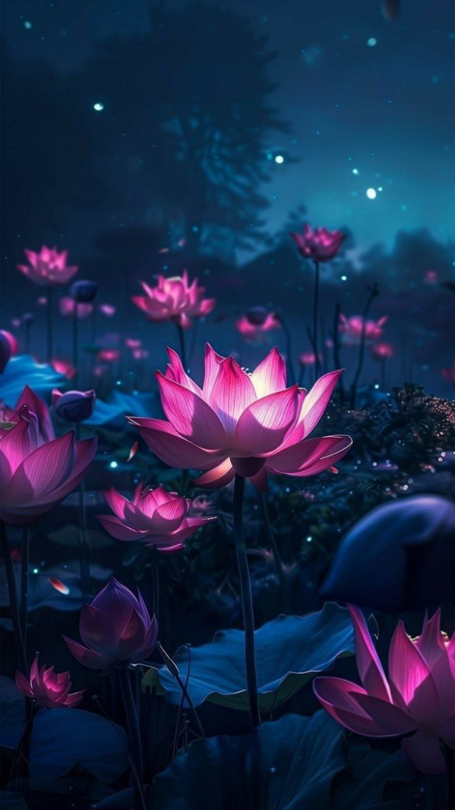Абсодия — растение, растущее повсюду. Оно красиво и изящно, чем всегда привлекало внимание. Купцы продавали его по всему миру, оно пользовалось спросом у садовников и считалось отличным подарком. Со временем Абсодию стали сажать повсюду, и теперь многие называют её сорняком.
Флосмин
Ареал: Весь континент
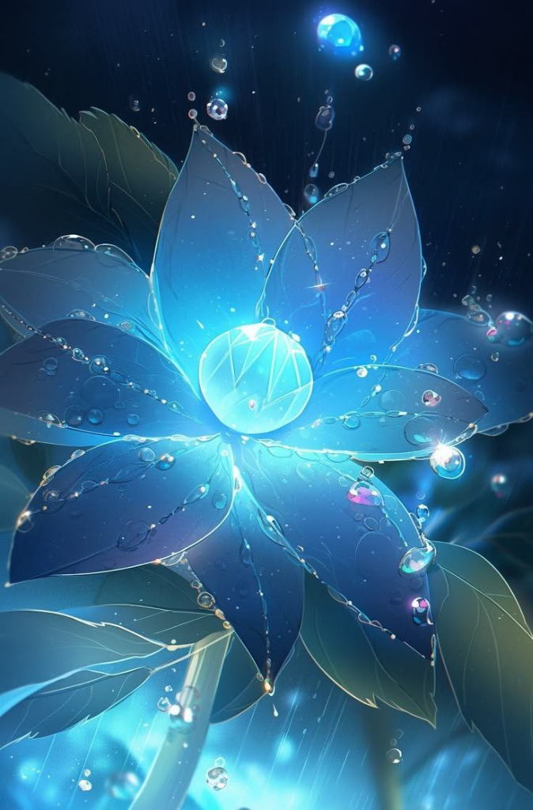Флосмин это на первый взгляд обычный и ничем не примечательный цветок. Но подойдя ближе можно заметить его необычное ядро. Прикоснувшись к нему, человек ощущает резкий холод, будто всё тело мгновенно окутывает ледяной туман.
Каменно
Ареал: Белостепье, Адгат

Каменно — маленькие существа, которые обычно обитают под землей. Они любят добывать драгоценные металлы, строить ходы и очищать эти металлы. К людям они относятся доброжелательно, и иногда их можно приручить. В благодарность они будут приносить различные дары в виде металлов.
Брелистый
Ареал: Белостепье, Адгат

Брелыстные — очень умные и добрые создания, любящие людей. Они легко поддаются дрессировке и любят человеческих детей. Местные жители уважают их и часто позволяют им гостить в своих домах.
Архей
Ареал: Белостепье, Адгат
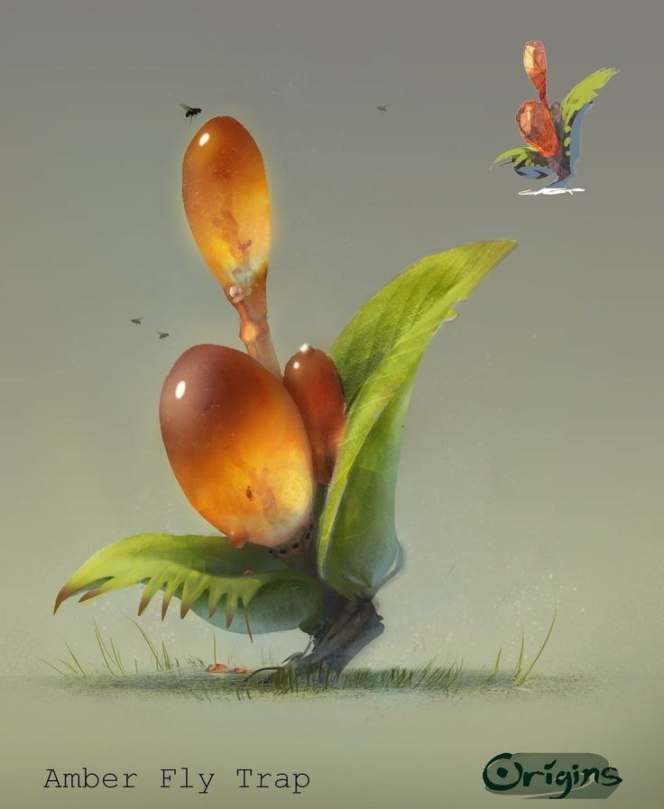Архей это растение, которое содержит в себе необычную жидкость, запахом и видом похожую на гниль. Пары растения безопасны для человека, но для насекомых они смертельны.
Чайтрава
Ареал: Белостепье, Адгат
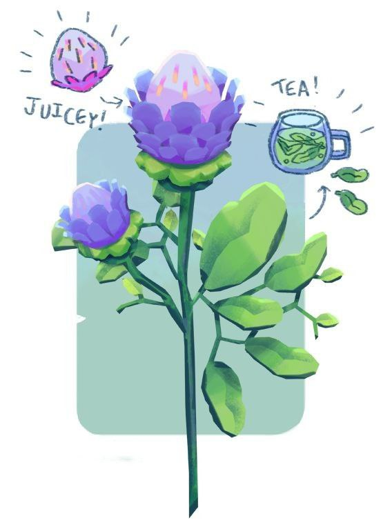Чайтрава это расслабляющее растение, из которого местные жители готовят чай. Семечко чайтравы из середины цветка можно использовать как лекарственное средство: оно содержит активные вещества, применимые в фитотерапии.
Микровив
Ареал: Рехия, Червонокаменец, Лугвина
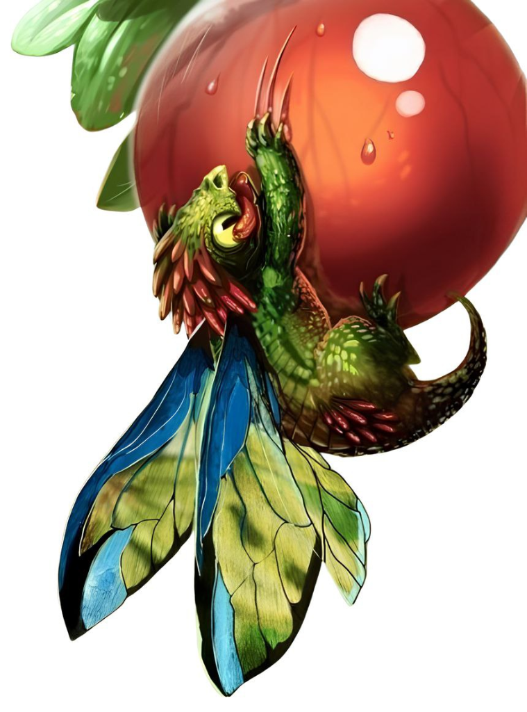Микровив это летающий паразит, который портит плоды различных деревьев. При длительном нахождении на плоде он может сделать его опасным для жизни человека, так как переносит смертельные токсины. Из зараженных им плодов можно сделать яд, который отлично подходит для смазывания стрел. Яд чувствителен к перепадам температур и плохо подходит для зелий.
Пэтумен
Ареал: Рехия, Червонокаменец, Лугвина
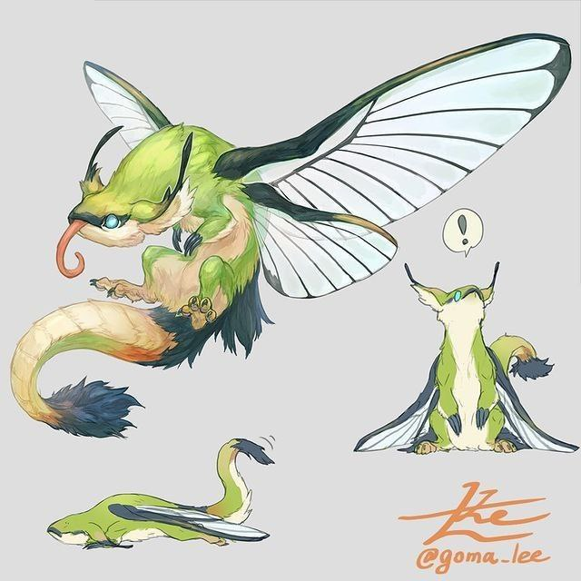Пэтумен — небольшое мохнатое существо с длинным языком и пластичными крыльями. Его слюна обладает способностью быстро заживлять раны, если в неё добавить определённые травы, например чайтраву.
Бубуки
Ареал: Рехия, Червонокаменец, Лугвина
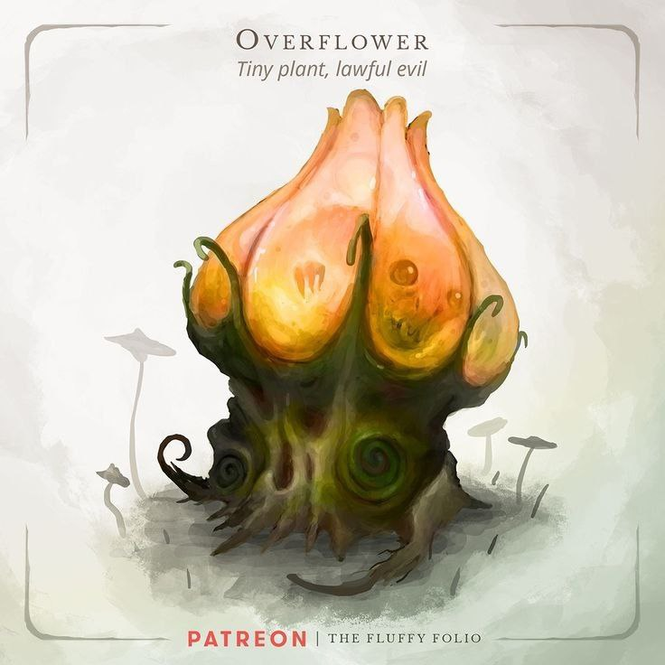Это небольшой, но необычный цветок, выделяющий особый газ со слабым сладким ароматом. Если вдыхать этот газ более 10 минут, начнётся сильная слабость, головокружение и потеря сознания. Газ действует незаметно, что делает его особенно опасным.
Зонлус
Ареал: Рехия, Червонокаменец, Лугвина
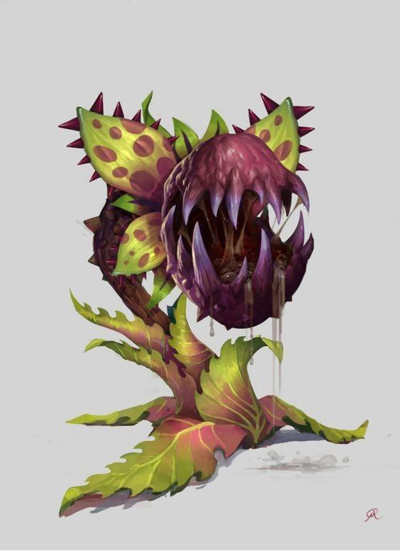Зонлус это хищный цветок внушительного размера. Когда жертва подходит ближе, он раскрывает бутоны, под которыми скрываются острые колючки. Будьте аккуратны при виде больших цветков в этой местности.
Ляманит
Ареал: Левида, Бережьин Зёв, Меланфия, Эквария, Дорикон, Галефтис
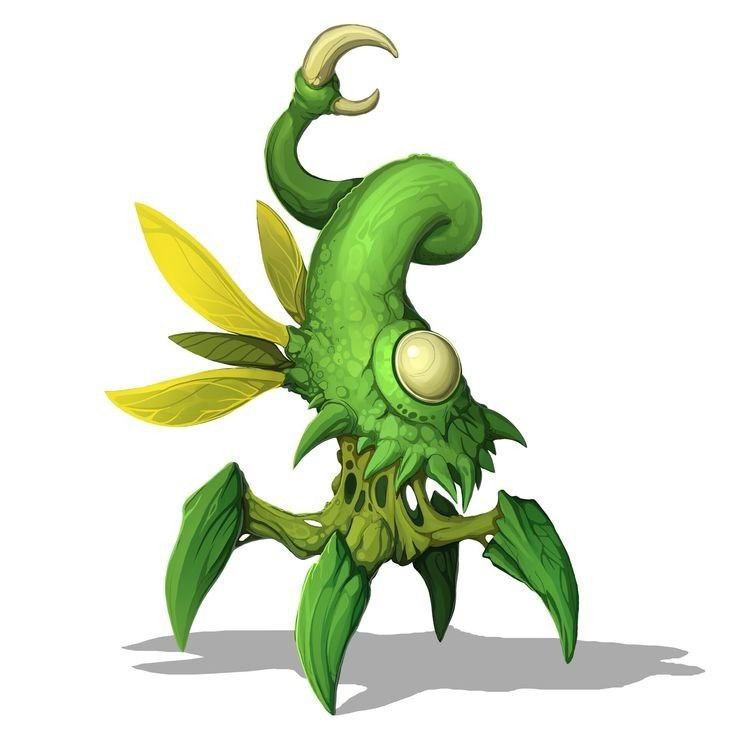Ляманит — существо, которое может восстанавливать силы и повышать выносливость. Если предложить ему дары природы, он позволит прикоснуться к своему «глазу силы», что даёт прилив бодрости и усиление характеристик на 5% (не чаще чем раз в 2 дня).
Хрома
Ареал: Левида, Бережьин Зёв
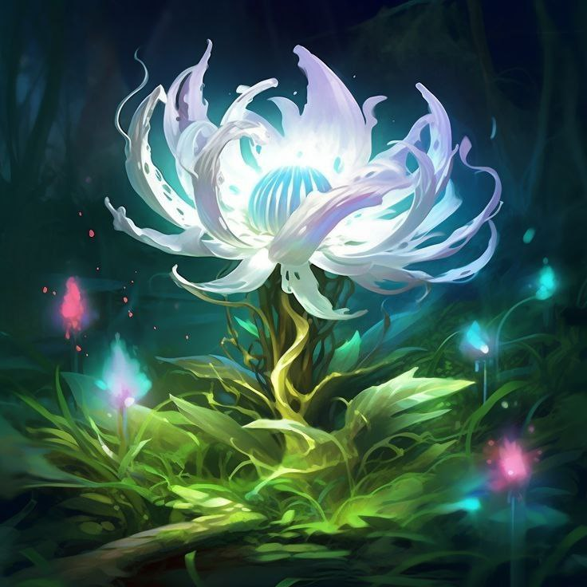Хрома это необычное растение, используемое в алхимии для создания ядов и универсальных красителей. Сам по себе цветок завораживает красотой.
Велкрас
Ареал: Левида, Бережьин Зёв; иногда Меланфия, Эквария, Дорикон, Галефтис
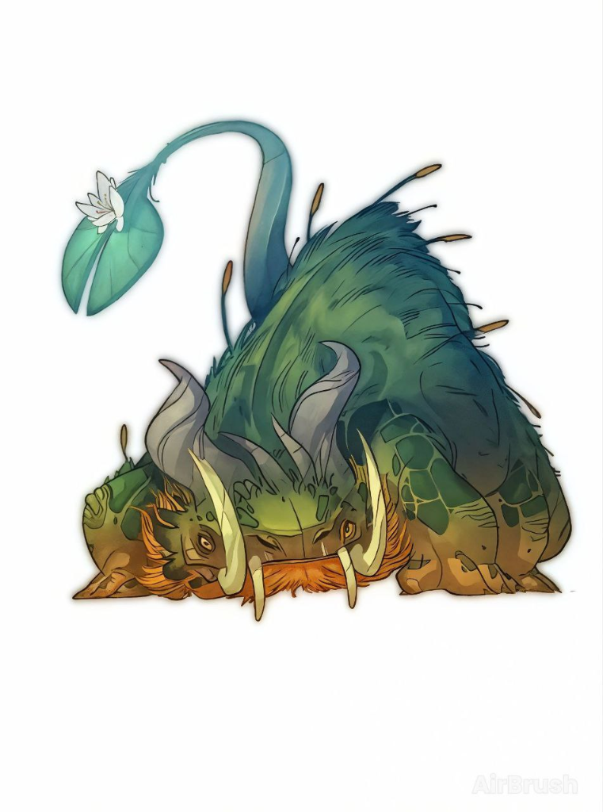Велкрас это крупное животное с острыми зубами и необычным хвостом. Несмотря на пугающий вид, он безразличен к другим существам. Он чувствует опасность: если велкрас резко начал убегать, стоит последовать его примеру.
Ядре
Ареал: Тифлосский Орден и Соляндия; редко Эйгридаль
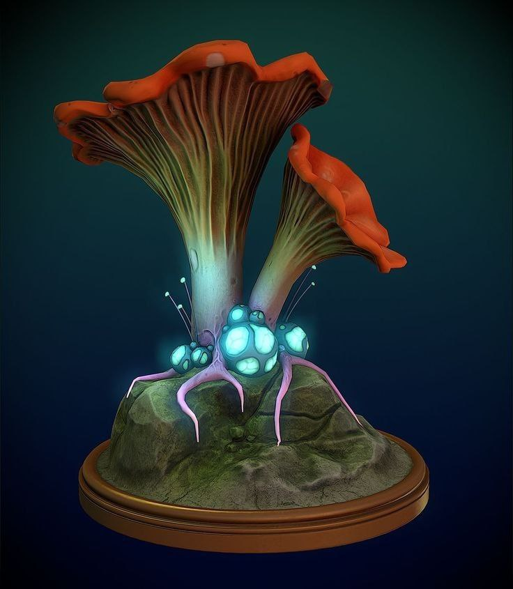Ядре это огромный гриб, растущий вблизи болот. Его пары токсичны и служат естественной защитой, отпугивая врагов.
Тонгокефалос
Ареал: Тифлосский Орден, Соляндия, Левида, Меланфия

Тонгокефалосы считаются неприхотливым скотом. Их длинный язык выделяет особую слюну, которая начинает светиться при контакте с арканой.
Куориклави
Ареал: Соляндия, Левида, Тифлосский Орден; Меланфия, Эквария, Дорикон, Галефтис
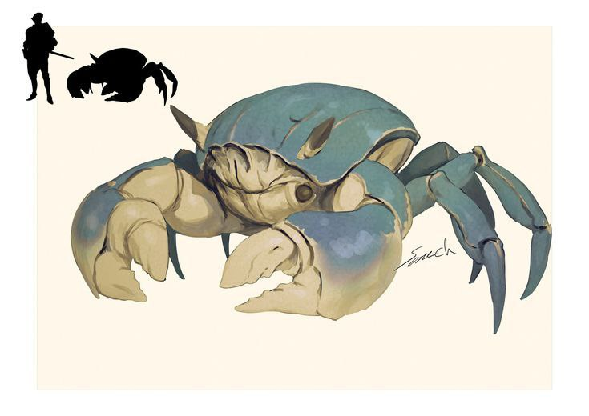Куориклави — большие дружелюбные крабы. Однако они умеют очень метко плеваться ядом, который парализует жертву. Их панцирь очень прочный, а мясо вкусное.
Ядроносец
Ареал: Фраукхейм, Джибал, Зильбербах, Эльменхайн

Ядроносец — хищный паук. Его паутина, оказавшись вне тела, мгновенно застывают и превращаются в камень.
Голтбик
Ареал: Эльменхайн, Зильбербах, Фраукхейм
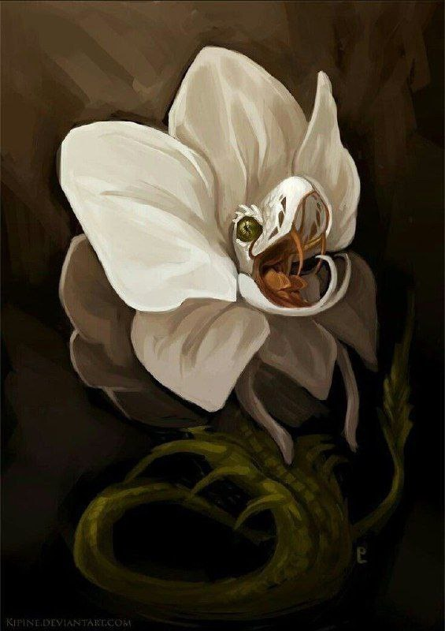Голтби это гибрид змеи и ромашки. Хоть их вид и шокирует, они безобидны: у них нет ни зубов, ни яда, и они прикреплены к земле корнями.
Дождевые пурпоны
Ареал: Фраукхейм, Зильбербах, Штайнвальд
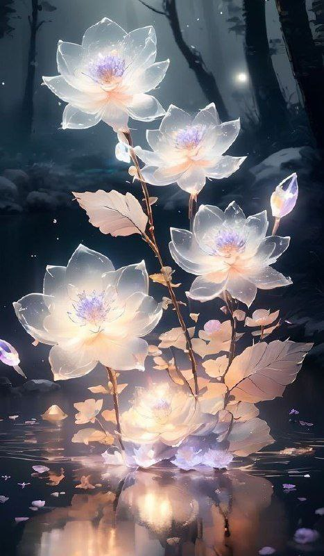Элегантные белые цветы с розовой пыльцой. Раскрываются лишь в дождливые дни, приманивая свечением животных. Их семена являются источником слабого постоянного света.
Дикий гриффон
Ареал: Фраукхейм, Фельсграу, Штайнвальд

Гриффоны являются агрессивными хищниками и вершиной пищевой цепи в своём регионе. Когда Гриффон голоден, от него стоит держаться подальше.
Риза
Ареал: Верхний Фоксланд, Нижний Фоксланд, Фраукхейм
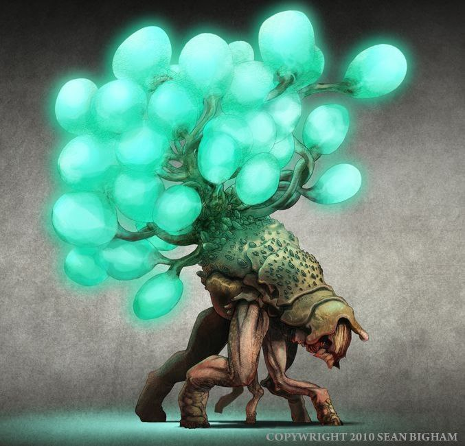Риза — растение, корни которого сплетаются в форму жука. Семена на вершине излучают мутационные волны. Длительное нахождение рядом с Ризой обязательно приведете к превращению человека в мутанта.
Боревик
Ареал: Верхний Фоксланд, Нижний Фоксланд
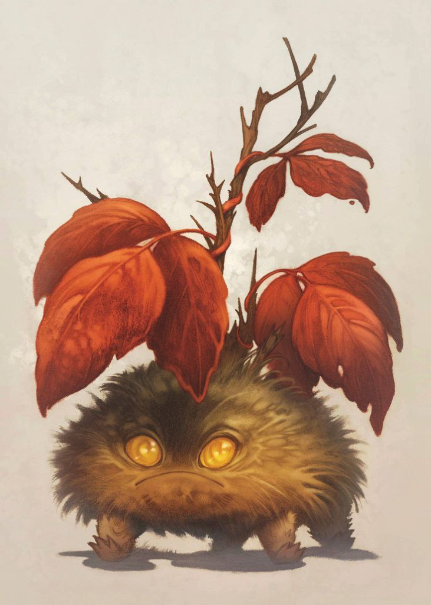Боревик это очень пугливый живой саженец. Из него может вырасти почти любое растение или куст, в случае если условия будут подходящими. Если приручить такого, можно выращивать экзотические растения из других стран.
Гилолаус
Ареал: Верхний Фоксланд, Нижний Фоксланд
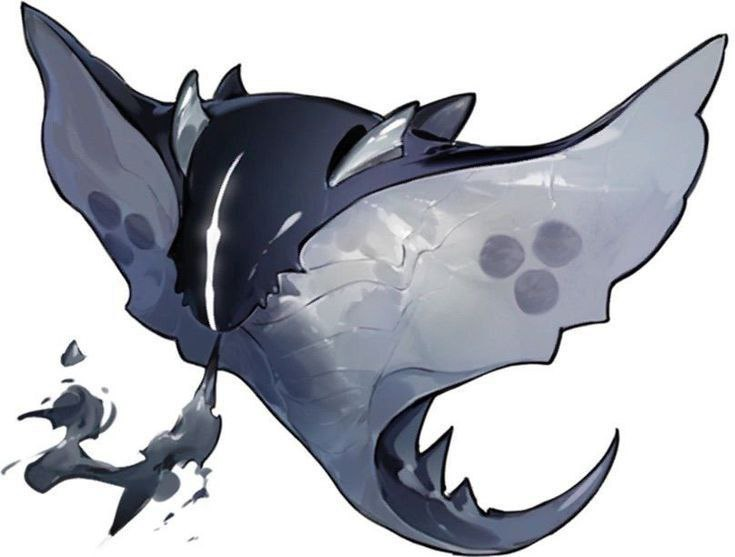Доброжелательное существо с жабрами. Его слюна способна изменять форму объектов: под её действием даже камень становится пластичным.
Коракс
Ареал: Тифлосский Орден, Эйгридаль
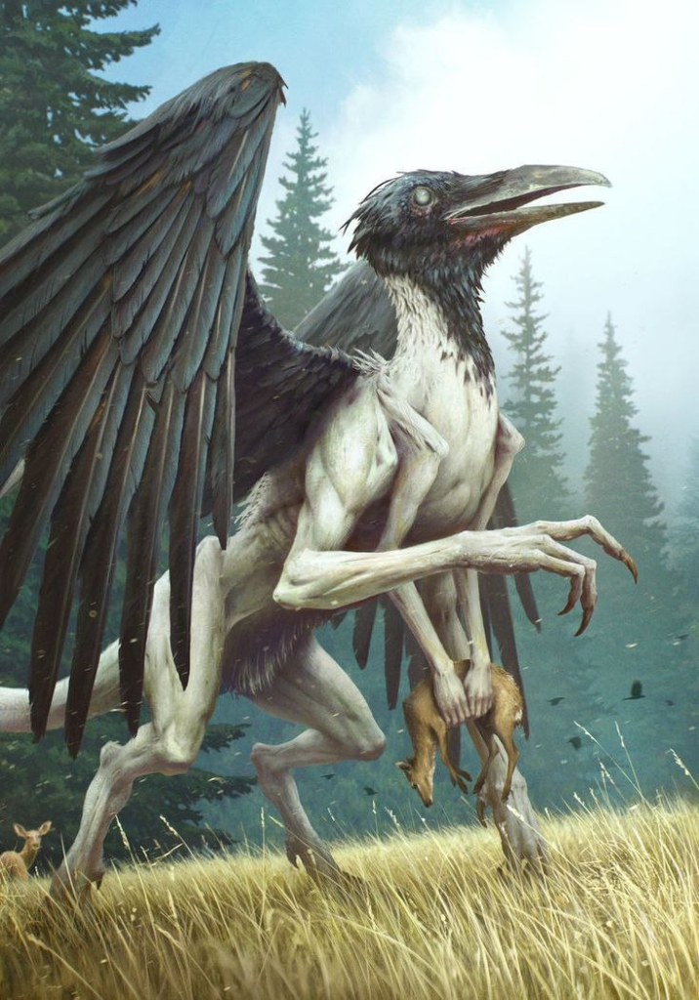Коракс это исполинская беспощадная птица высотой 3–4 метра. Ориентируется на запах, почти полностью слепа. Если в этом регионе вы получили рану, её нужно немедленно закрыть, иначе Коракс запах вашей крови.
Капнос
Ареал: Тифлосский Орден, Эйгридаль
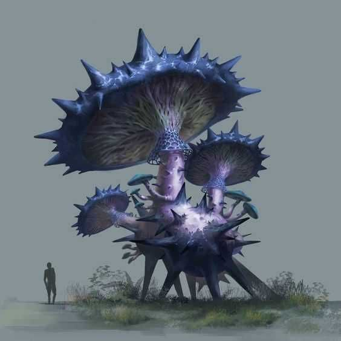Грибы, растущие у болот. Содержат токсичный дым, вызывающий временные галлюцинации. В небольших дозах часто используется местными жителями как наркотическое вещество, однако будьте остородны: его пары вредят здоровью.
Лулудум
Ареал: Вади аль-Шамс, Дар аль-Сахра, Эльменхайн
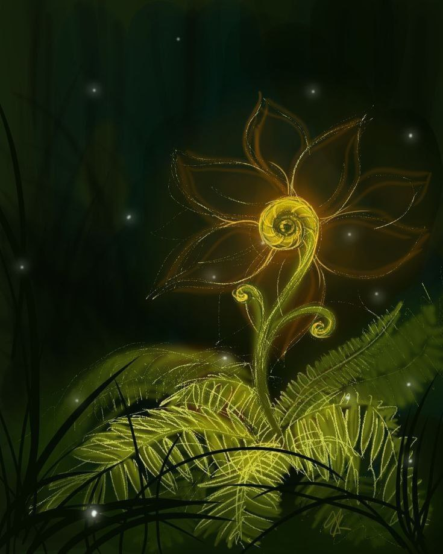Цветок, способный хранить воспоминания о месте, где он находился. Один вдох аромата увядающего лулудума позволяет за мгновение пережить все моменты, которые "видел" цветок.
Алгрус
Ареал: Вади аль-Шамс, Дар аль-Сахра, Эльменхайн
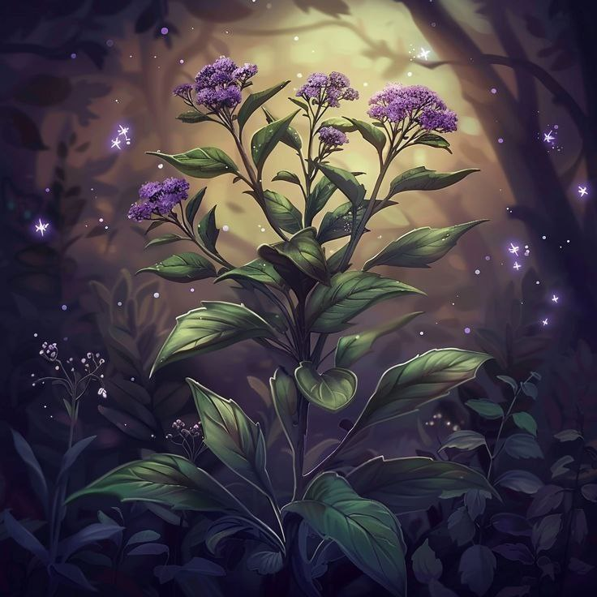Цветок-оберег от проклятий и заговоров. Согласно легендам, носимый с собой мешочек с его лепестками защищает владельца.
Ястрик
Ареал: Вади аль-Шамс, Дар аль-Сахра, Эльменхайн
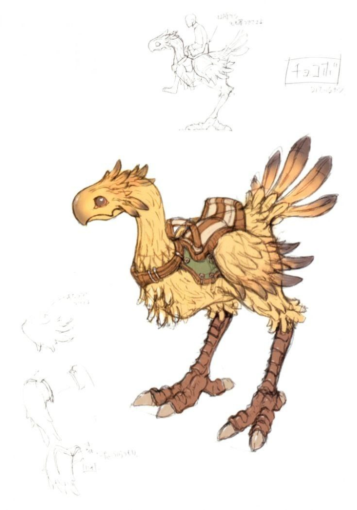Добрые животные, бескорыстно помогающие путникам в пустыне и любящие людей. Они очень быстрые и обожают когда им гладят животик.
Кератоглиф
Ареал: Эльменхайн, Фраукхейм, Тифлосский Орден, Соляндия
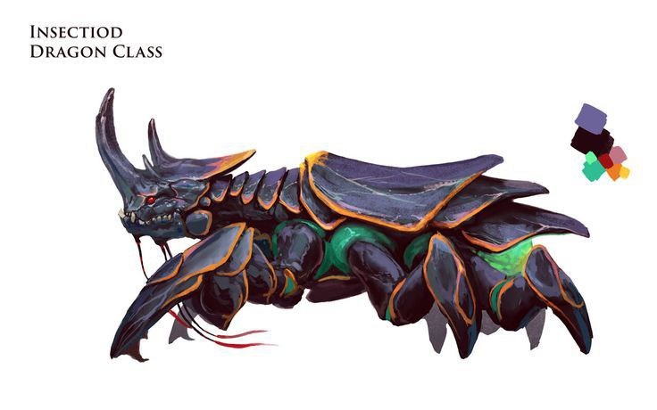Опасный микроскопический паразит. Крепится к корням волос и питается кератином, вызывая облысение, язвы и шелушение. Если симптомы проявились, у человека есть всего пара дней, прежде чем паразит закроется под кожей головы.
Шаттенкрот
Ареал: Эльменхайн, Верхний Фоксланд, Зильбербах, Нижний Фоксланд
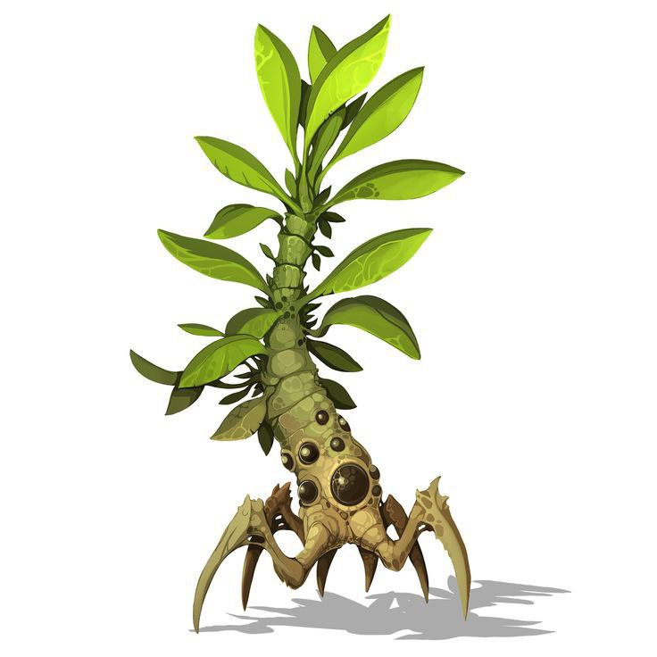Шаттенкроты выглядят довольно опасно, но на самом деле пугливы, и будут своими когтями впиваться в землю если кто-то хоть немного подойдёт. Если их и достать, то они будут активно стараться защищаться и убежать. Их "глаза" служат для улавливания тонких вибраций в земле.
Изумрудник
Ареал: Фраукхейм, Эльменхайн,Верхний Фоксланд, Нижний Фоксланд, Зильбербах
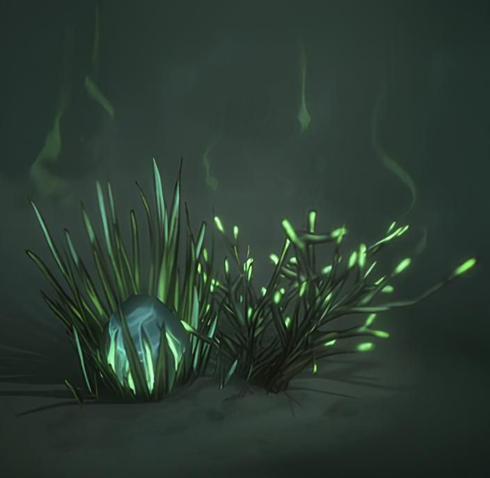Изумрудник получил такое название из-за цвета. Внутри твёрдой кожури его плода хранится лекарство от многих болезней. Но трава вокруг него очень опасна: она покрыта сильным ядом который медленно испаряется в воздух. Поэтому даже находится рядом очень опасно.
Фельксрайхер
Ареал: Зильбербах, Фраукхейм, Верхний Фоксланд

Фельксрайхер это маленькое существо с очень крепким панцирем. Обычно они копаются в горный пещерах или у подножий гор. Они мимикрируют под камни, и ловят мелких насекомых, а также у них для этого есть длинный, как у ящериц, язык, и глаза которые отлично видят в темноте.
Пепельный цветок
Ареал: Штайнвальд, Фельсграу, Зильбербах
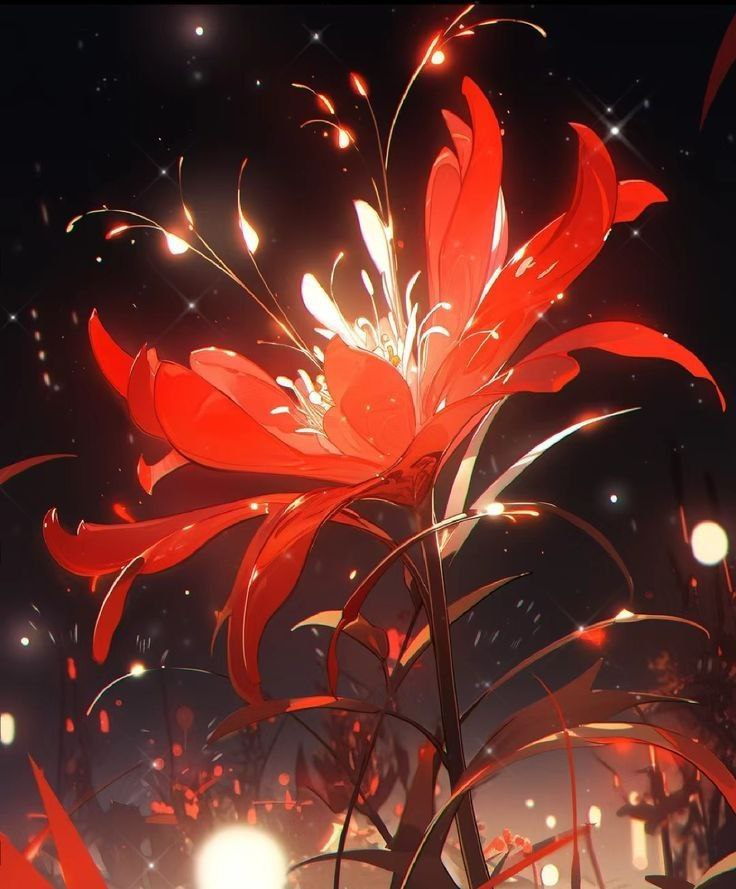Яркий светящийся цветок, крайне редкий. За год на всём континенте вырастет не более трёх сотен.
Биттербирен
Ареал: Штайнвальд, Фельсграу
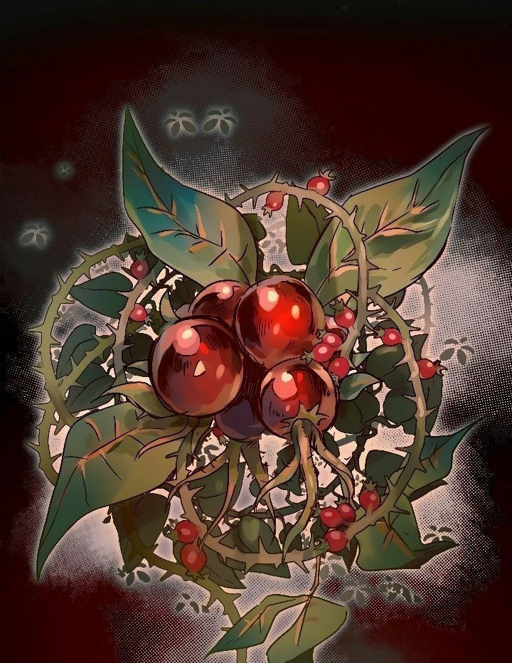Необычно крупные и горькие ягоды. В сыром виде токсичны, но при варке в зелье токсины уходят.
Коконы
Ареал: Эльменхайн, Фельсграу, Зильбербах

Загадочные стайные существа, которые прячутся за своими зелёными крыльями. Они спокойны и не агрессивны, если их не беспокоить. Однако, если случайно потревожить коконов, существа могут начать нападать, кусая. Укус вводит яд с усыпляющим эффектом. Через несколько минут наступает сон, а когда вы проснетесь, вам будет трудно двигаться.Эффект слабости сохраняется ещё в течение 12 часов.
Ерсфрух
Ареал: Бьорнхейд, Фростхейм, Нордмарк
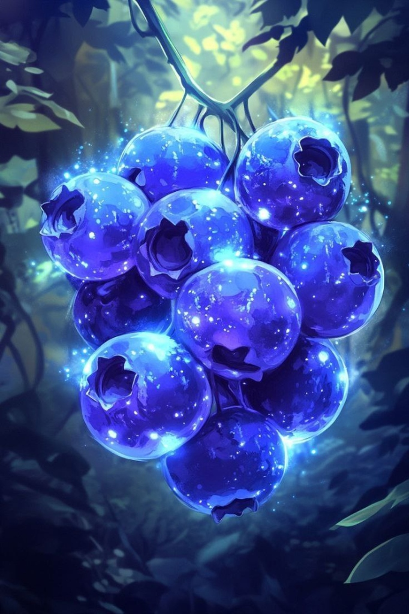Это ягоды, излучающие голубой свет. Ими можно подкрепиться: они сладкие и нежные на вкус. Съев всего одну ягодку, вы будете ощущать словно вы абсолютно сыты.
Лихта
Ареал: Бьорнхейд, Фростхейм
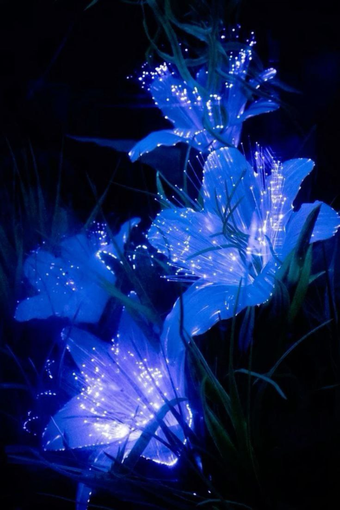Лихта это цветок, который расцветает только ночью. Его пыльца светится в темноте, чтобы привлечь внимание. Иногда кажется что лихта обладает разумом, но не может об этом сказать. Когда к ней подходит живое существо, она начинает шататься, как будто приветствует его, но всем на неё почему-то всё равно.
Барлотон
Ареал: Бьорнхейд, Фростхейм
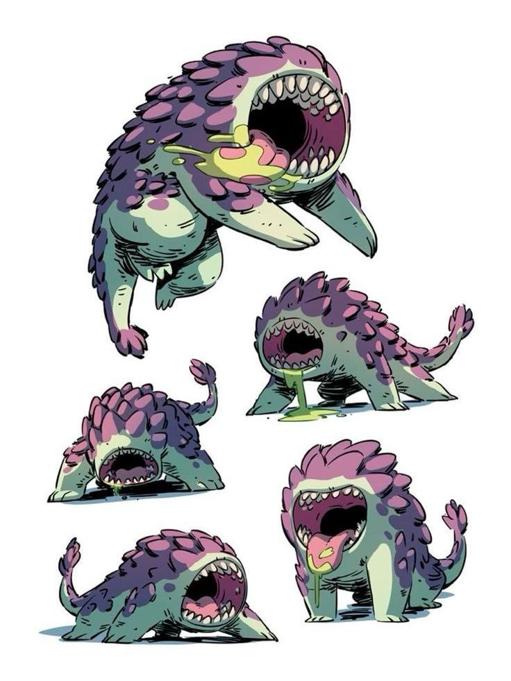Прожорливое, всеядное существо. На людей он не нападает в силу своих небольших размеров. Польза Барлотона для людей заключается в его слюне, содержащей небольшое количество кислоты. При смешивании с травами она превращается в химический реагент, который используют в очистке металлов.
Вихас
Ареал: Бьорнхейд, Фростхейм, Нордмарк, Кассперкут
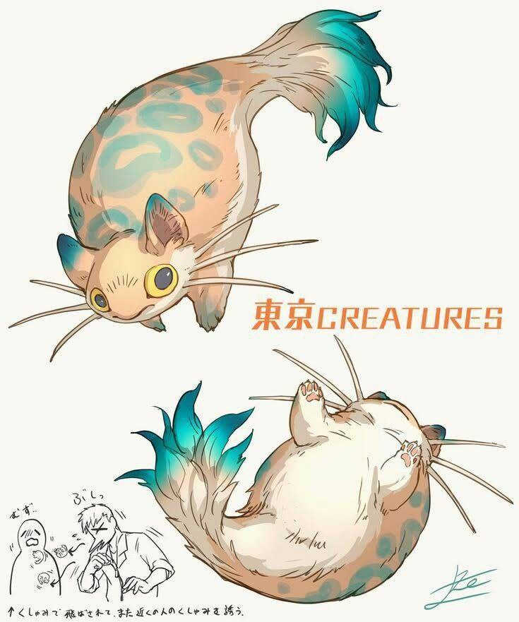Милое существо, которое наполняет находящихся рядом с ним людей теплотой и добром, избавляя их от проблем и тревог. Однакоесли находиться рядом с ним слишком долго, вы начнёте кашлять и задыхаться. Богачи используют его как средство получить наркотическое удовольствие.
Кралин
Ареал: Нордмарк, Фростхейм, Кассперкут
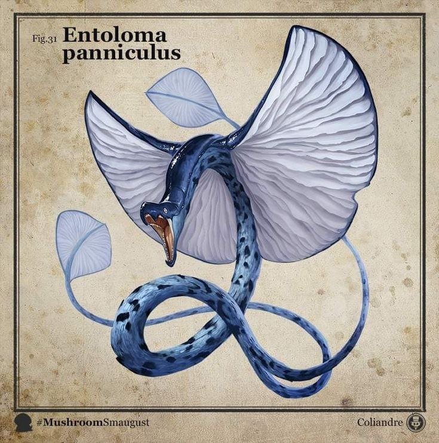Маленькие змейки, магический яд которых быстро разносится в крови и замораживает тело жертвы прямо изнутри.
Флаур
Ареал: Нордмарк, Фростхейм, Бьорнхейд, Кассперкут
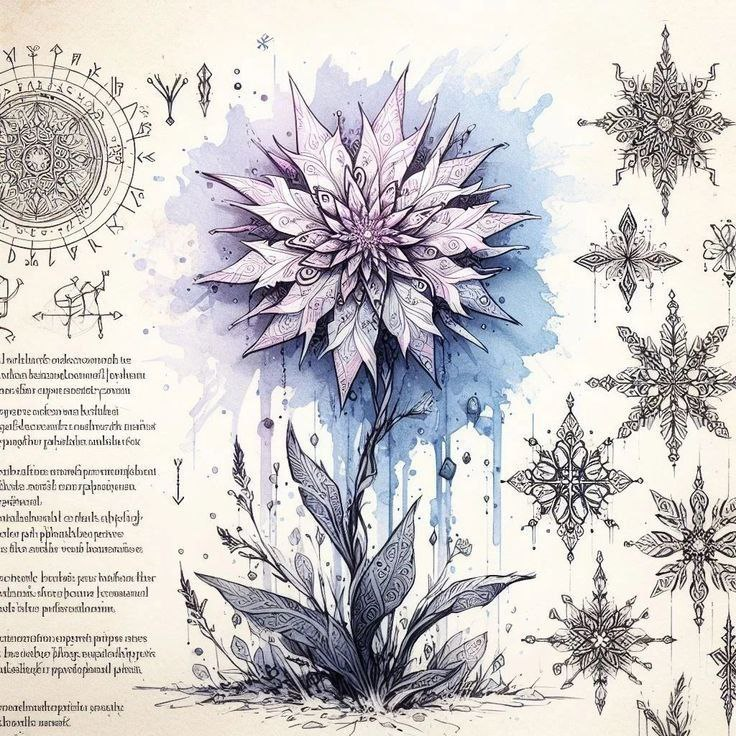Цветок с узорами на лепестках. Давным-давно люди начали думать, что этот цветок послан им на случай опасности, ведь его узоры пугали местных животных.
Погаш
Ареал: Нордмарк, Бьорнхейд, Кассперкут
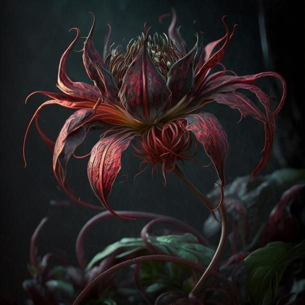Когда-то светившийся цветок, который потерял свою способность из-за резкого похолодания климата.
Гилкус
Ареал: Нордмарк, Кассперкут
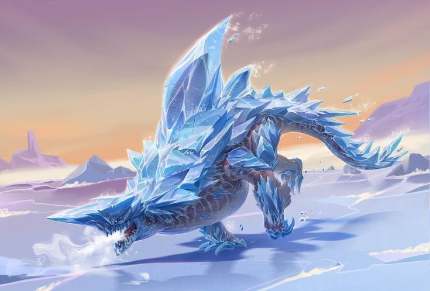Существа, возникшие из-за воздействия сурового климата. Их кожа покрыта холодной чешуей с кристаллами, обладающими уникальными свойствами, которые помогают удерживать холод и предотвращают замерзание тела. Эти кристаллы действуют как природные регуляторы температуры, обеспечивая выживание в экстремальных условиях. С возрастом чешуя и кристаллы опадают, становясь ценным материалом.
Чутия
Ареал: Лосилиания, Марэ-Рин
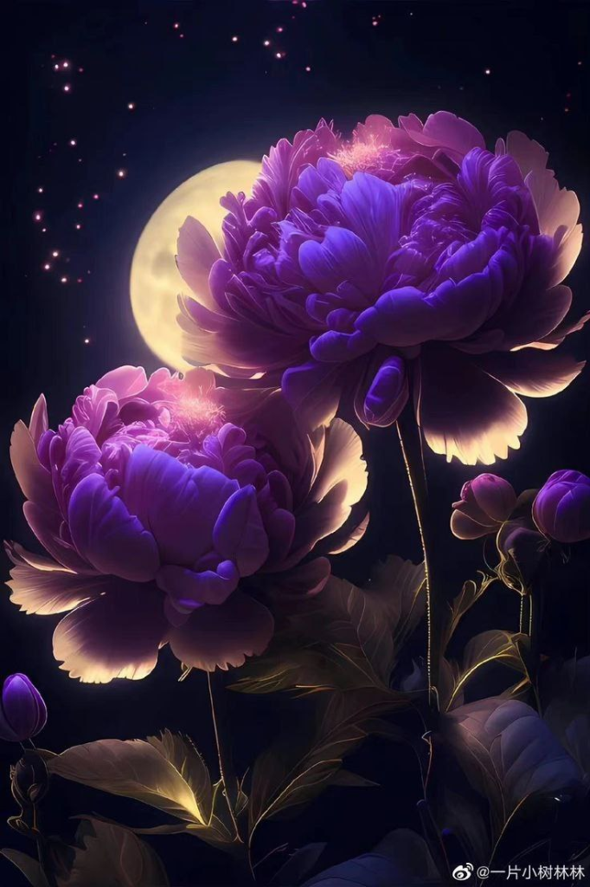Цветок, лепестки которого начинают сверкать тёплым светом при обнаружении поблизости магических предметов или существ.
Оикос
Ареал: Лосилиания, Марэ-Рин
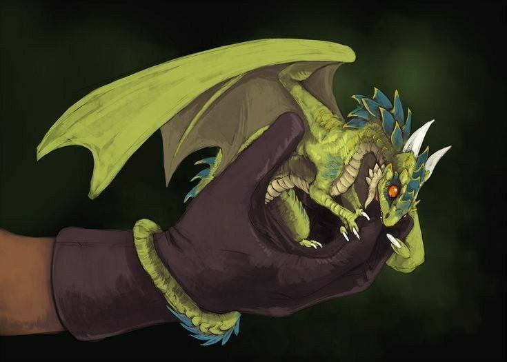Оикосы относятся к виду миниатюрных драконов. Они безопасны и очень любят людей, поэтому их часто заводят как домашних питомцев. Они умны и храбры, обязаны защищать своего хозяина любой ценой.
Жар-птица
Ареал: Лосилиания, Марэ-Рин, Даштиран, Заранджир, Вади аль-Шамс

Смелые и темпераментные птицы, которые неплохо относятся к людям и не боятся их. Однако их главная особенность заключается в том, что они обладают способностью создавать пирокристаллы и обладают силой огня.
Оселот
Ареал: Захра, Альхаймин, Джибал

Оселот это насекомое из класса паукообразных. Оно небольшого размера, но очень хитрое. Оселот кусает людей и животных. При укусе он забирает немного крови и вводит в организм бактерию, вызывающую чрезмерное потоотделение. В пустынях, где он водится, это приводит к быстрому обезвоживанию.
Ятрико
Ареал: Захра, Альхаймин, Джибал

Растение, семена которого, по легендам, позволяют увидеть будущее. В реальности сок семян вызывает сильные галлюцинации.
Марот
Ареал: Захра, Альхаймин, Джибал
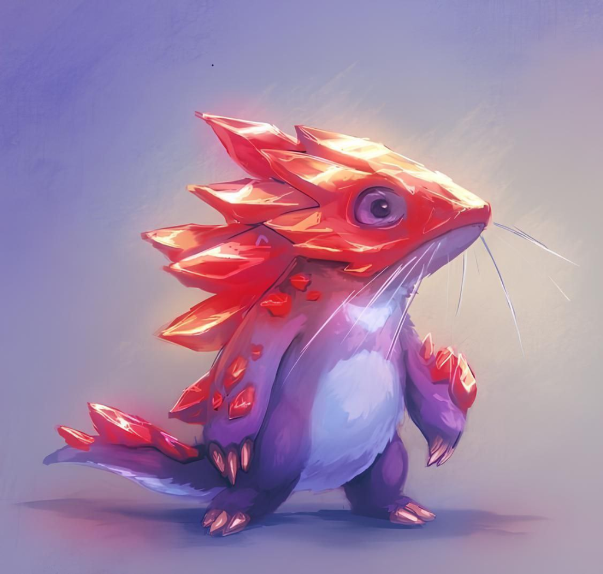Разумное существо, чьё тело покрыто драгоценными камнями. Обладает превосходным нюхом на сокровища и минералы.
Сухолит
Ареал: Захра, Альхаймин, Джибал

Растение, способное выживать без воды до 25 дней. Его стебель может очищать даже самую грязную воду, делая её пригодной для питья. Это спасает жизнь путников в жарких регионах.
Сапроцветы
Ареал: Гран, Берг

Необычные растения, питающиеся останками живых существ. Несмотря на холод климата, они излучают сильное тепло.
Криорозы
Ареал: Гран, Берг
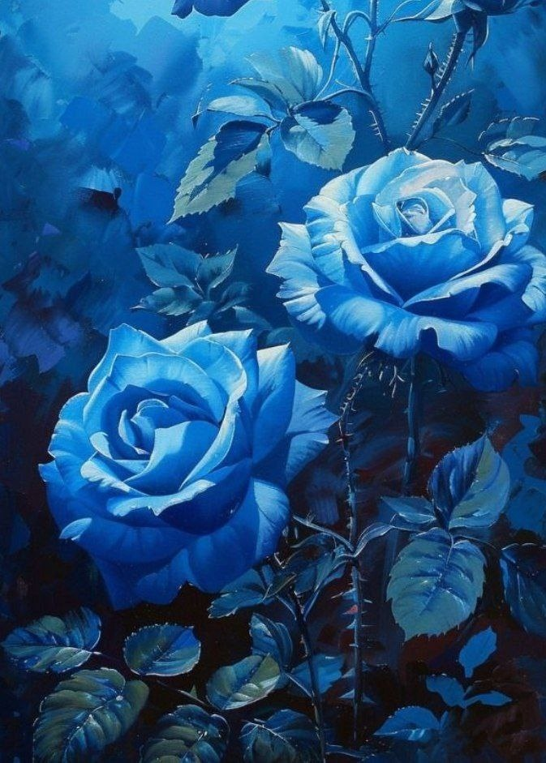Розы, адаптировавшиеся к морозам. Опавшие лепестки замещаются льдом, сохраняющим форму цветка. Их стебли используются для получения сахара.
Артилар
Ареал: Остров Варнхольм

Дерево со светящимися лепестками. Его плоды несут в себе электрический заряд, поэтому прикасаться к ним опасно.
Харатиса
Ареал: Остров Варнхольм
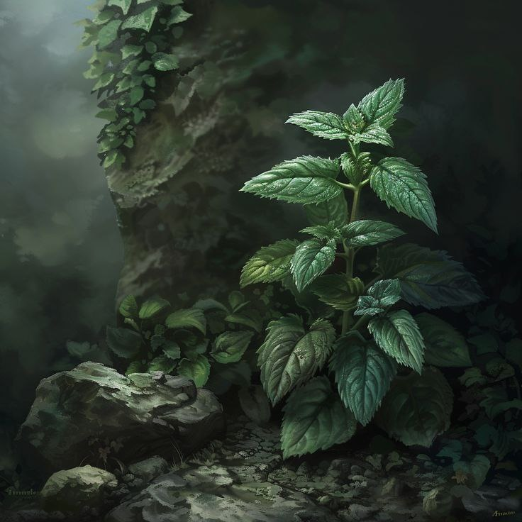Растение с мощным расслабляющим эффектом. При чрезмерном употреблении вызывает необратимое привыкание.
Хималал
Ареал: Остров Варнхольм
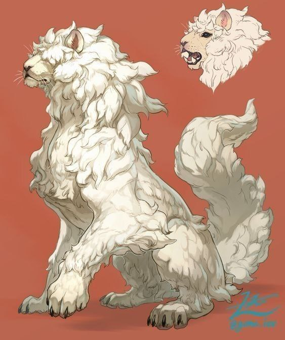Существо, покрытое густой белой шерстью. Оно практически невидимо в метелях, а его голос напоминает завывание ветра.
Барлиты
Ареал: Остров Серранья
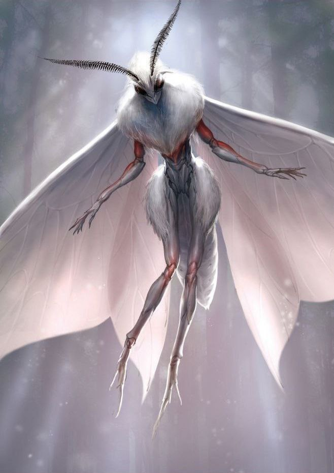Беспощадные насекомые-кровопийцы, обитающие в пещерах. Крайне агрессивны даже будучи сытыми.
Варкелия
Ареал: Остров Серранья

Полезное, но коварное растение. Отлично избавляет от боли, но вызывает тяжелую зависимость.